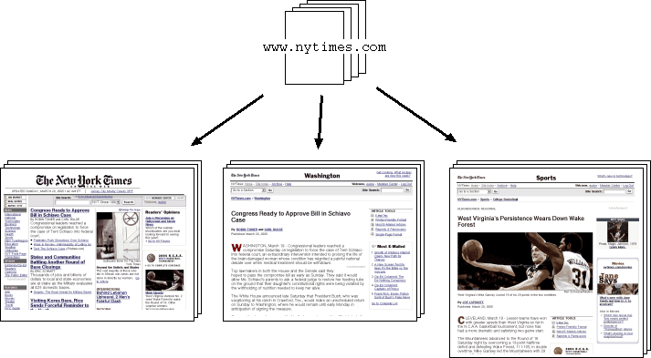
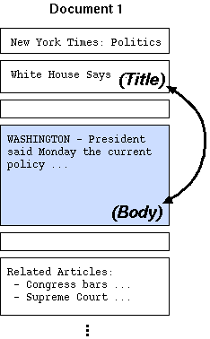

Webstemmer では、以下のような仮定をもとにして Web ページを分析しています。
Webstemmer はこの仮定をもとに、 あるニュースサイトの同一レイアウトをもつページをまとめ、 それらのページ中で「変化していない部分」をさがします。 バナーやナビゲーション用のリンクなどはレイアウトが同じなら 通常ほとんど同じ内容で現れるので、これらを除くことにより メインの文章のみが抽出できます。


このアルゴリズムで多用している基礎技術は 2つあります。ひとつは 編集距離 (あるいはレーベンシュタイン距離) と呼ばれるもので、これは 2つの異なる文字列の類似度を計算するために使われます。もうひとつは クラスタリングで、これは任意の尺度にもとづいた距離をつかって 似たものどうしをまとめる技術です。 これらの技術はおもに 1960年代には開発されていました。
レイアウト分析ツール analyze.py は、似たようなページ構造 (レイアウト) をもつページを
クラスタリング (clustering) することによって代表的なパターンを抽出しています。
クラスタリングをおこなうためには、各 HTML ページのレイアウトをなんらかのかたちで比較し、
類似度を算出する必要があります。つぎに互いによく似ている (類似度の高い) ページを
クラスタとしてまとめ、クラスタ内のページに共通する要素を「パターン」として抽出します。
ここでは analyze.py プログラムの基本的なアルゴリズムを説明します。
analyze.py では、まず取得した各ページを「レイアウト・ブロック (LayoutBlock)」と呼ばれる要素に分解します (図 1)。
ほんらい、HTML ページの要素 (エレメント) は木構造をなしていますが、
ここでは HTML ブロック要素 (p, div, h3 など) のみに着目し、
ページのレイアウトをこれらのブロックの一次元的な列として解釈します。
analyze.py は HTML ページを解析し、以下のようなレイアウト・ブロックの列を生成します:

図1. HTML ページからレイアウト・ブロック列への変換
各ページのレイアウトの類似度は、それらのレイアウト・ブロック列の編集距離 (edit distance) によって 決められます。これはちょうど各レイアウト・ブロックを文字列とみなし、それらの diff をとるのに似ています。 具体的には、ふたつのブロック列 A および B に共通する最大の順列 (maximum common sequence、MCS) をとりだし、 それと元のブロック列との比率を計算します (図 2)。

図2. ふたつのレイアウト・ブロック列の比較
クラスタリングをおこなうためには、N個のページすべてのとりうる組み合わせ
(N×N個) に対して、Step 2. で説明した類似度を計算する必要があります。
(実際に analyze.py で使っているクラスタリング・アルゴリズムでは、
計算をサボっているためにこの数は N×N よりもやや少なくなっています。)
類似度が指定されたしきい値よりも大きいページは同じクラスタにまとめられます。
クラスタリングは階層的 (hierarchical) に行われ、このときのしきい値は
analayze.py プログラムの '-t' オプションで指定できます。
クラスタを完成させたら、各クラスタごとに共通するレイアウト・ブロックの
HTML 要素をとり出し (図 3)、
それを「レイアウト・パターン (LayoutPattern)」として保存します。

図3. レイアウト・パターンの抽出
つぎに抽出された各レイアウト・パターンの中から、バナーやナビゲーション用のリンクと 思われる要素を削除します。実際にはこれはパターン中から完全に削除されるのではなく、 あるレイアウト・パターン中の各レイアウト・ブロックには DiffScore という値がつけられ、この値が一定以下の ブロックは実際のテキスト抽出時にスキップされます。DiffScore は Step 3. で得られた各クラスタのそれぞれのブロックにある文字列を比較して、 それが「(各ページごとに) どれくらい異なっているか」を計算することにより得られます。 ここでも diff と同じように編集距離を使っています。
extract.py プログラムの '-T' オプションで
指定できます。

図4. 共通したテキストを発見する
Webstemmer ではページの本文を「もっともテキストが多く含まれるレイアウト・ブロック」として
定義しています。本文はこれでよいのですが、ページのタイトルは少々厄介です。
analyze.py では以下のような仮定をもとにしてページのタイトルを決定しています:
<a> ... </a> で囲まれている文字列)、またはそのページの本文と類似している。
タイトル抽出は 2つのケースに分かれます。まず、
そのページにリンクしている同一サイト内のページのアンカーテキストが使用可能な場合
(crawler.py を使ってページをクロールした場合、
この情報は linkinfo というファイルにまとめて格納されており、
analyze.py はこれを自動的に利用します)。
この場合、各レイアウト・パターンごとにどのブロックがもっともこのアンカーテキストに
類似しているかを計算し、そのブロック (本文ブロックの前にある) をタイトルとみなします。
いっぽう、アンカーテキスト情報が不可能な場合 (これはバラバラに取得された
ページを分析する場合で、各ページのリンク関係が失われてしまっている場合です)、
analyze.py は代替措置として、そのページの本文より前に出現し、
本文テキストにもっとも類似しているブロックをタイトルとみなします。
以前のバージョンの Webstemmer ではこの方法のみを使ってタイトルを抽出していましたが、
この方法ではサイトによってタイトル部分を間違える可能性が高くなります。
このときに使われる類似度のしきい値は、analyze.py プログラムに
与える '-T' オプションによって指定できます。
 図5-1. アンカーテキストが使える場合 |
 |
In order to find the main text of each page, we compute the "MainScore" for each layout block, which shows how much significant text is included within that block:
-M' option in extract.py program.
The sequence of layout blocks in each cluster is stored in a layout pattern file. Each layout block in a cluster has a DiffScore and MainScore. Then, each cluster can have the score of significence, indicating how much that cluster is important. This is based on the number of significant characters (excluding anchor texts) in the main text and the number of pages in the cluster:
実際に得られたパターンファイルの見方については、
パターンファイルの構造の項で解説しています。
なお、このとき
After determining the page layout pattern, the program extracts
texts from the layout blocks selected by the user-specified
thresholds, and output them as either
以下に 1010wins.com のサイトを解析して得られたパターンの例を載せます
(見やすさのために、ここでは 1行をいくつかに分解して表示していますが、
実際には 1パターン中に改行が入ってはいけません)。
実際には、ほとんどの web ページは、もっとずっと簡単な方法で本文を
抽出できる場合が多いのです (たとえば、一定以上の長さをもつ行を取りだすとか、
句読点のたくさん含まれている部分をとりだすとか)。
したがって、ここで説明している努力のほとんどは、意味のないものです。
しかしアホな研究の例としてはおもしろいでしょう。
Last Modified: Thu Sep 6 12:59:11 JST 2007
本文を抽出する extract.py
extract.py プログラムは、analyze.py で得られた
パターンをつかって、与えられた HTML ページから本文とタイトルを抜き出します。
まず与えられた HTMLページを analyze.py と同様のやりかたで
レイアウト・ブロック列に変換し、それとパターンファイル中にある
各パターンのレイアウト・ブロック列との類似度を比較します。
もっとも類似度の高いパターンがそのページにマッチすると判定され、
あとはパターン中で指定されている本文ブロックとタイトル・ブロックから
テキストを抽出して完了です。
extract.py には "Strict(厳格)なモード" と呼ばれる
オプションがあります (-S オプション)。この機能を使うと、
パターンとのマッチングをとるさいに、パターン中のレイアウト・ブロックが
ひとつでも比較するページに欠けていると、たとえいくら類似度が高くても
そのパターンは「失格」とします。これにより非常に厳密なマッチングが可能になりますが、
この機能を使うとサイトによっては取れるページ数がかなり少なくなります。
これは、あるニュースサイトにおいては、日によってすべてのページの
レイアウトが一斉に (しかし微妙に) 変化しているためです。
TITLE:,
MAIN: or SUB: according to its
DiffScore and MainScore value.

図6. 与えられたページに一致するレイアウト・パターンを検索する
パターンファイルの構造
analyze.py が生成するパターンは
テキストファイルとして出力されます。これはいくつかの値を
Python の repr() 形式で表現したもので、1行に 1パターンが記され、
各パターンの間には空行か '#' で始まるコメントが記されます。
各パターンのコメントには、そのパターンの「記事らしさ」を表すスコアとともに、
レイアウト分析時にそのパターンが実際に取得された URL (ページID) の列が
記されています。各パターンのスコアは、そのページに (アンカーテキスト以外の)
異なるテキストがどの程度含まれていたかによって決定されます。
### fname='/orange1/news/data/200509210801/1010wins.200509210801.zip' (学習に用いたデータファイル名)
### fname='/orange1/news/data/200509290801/1010wins.200509290801.zip'
### fname='/orange1/news/data/200510020801/1010wins.200510020801.zip'
### cluster_threshold=0.970000 (クラスタリングのしきい値)
### title_threshold=0.600000 (タイトル判定の類似度しきい値)
### pages=49 (学習に用いた総ページ数)
# 210473.457289 <200509290801/1010wins.com/topstories/local_story_272071540.html> (パターン1)
# (学習時このクラスタに所属したページのID)
# 200509290801/1010wins.com/topstories/local_story_272071540.html
# 200510020801/1010wins.com/topstories/local_story_274132949.html
# 200509290801/1010wins.com/topstories/local_story_271163108.html
# 200509290801/1010wins.com/topstories/local_story_272064450.html
# ... (中略) ...
# 200510020801/1010wins.com/topstories/local_story_274135102.html
# 200509290801/1010wins.com/topstories/local_story_272064718.html
# 200509290801/1010wins.com/topstories/local_story_271194546.html
(
210473.45728912693, # レイアウト・パターンのスコア
'200509290801/1010wins.com/topstories/local_story_272071540.html', # レイアウト・パターンの名前
7, # タイトルを表すブロック番号
10, # 本文を表すブロック番号
[ # 以下にレイアウト・ブロックの記述が続く
# (DiffScore, 'HTMLタグ名')
(0.42488894201079702, 'title'),
(0.0, 'td:class=stationlinks:colspan=2/div/div'),
(0.0, 'tr/td:class=searchbar:valign=middle/span:class=search'),
(0.0, 'tr/td:align=right:class=searchbar/span:class=search'),
(0.13136288998357964, 'td:align=right:class=searchbar/span:class=search/span:class=search'),
(0.16976127320954906, 'tr/td:align=right:class=searchbar/span:class=search'),
(0.0, 'table:align=center/tr/td'),
(0.74965728145101762, 'tr/td:align=left/span:class=headline'), # タイトル
(0.077061469265367319, 'table:align=left/tr/td:align=left:class=features'),
(0.25416224979734364, 'tr/td:align=left/span:class=standardsm'),
(0.99167203351096023, 'tr/td:align=left/span:class=standard'), # 本文
(0.0, 'tr/td:align=left/span:class=standardsm'),
(0.0, 'table/tr/td:class=features'),
(0.3389421948127162, 'tr/td:class=features/li'),
(0.55377940168988349, 'div:class=output/div:class=even/div:class=price'),
(0.62540834845735027, 'div:class=output/div:class=even/div:class=color'),
(0.61564112595242082, 'div:class=even/div:class=dealer/span'),
(0.58252873563218388, 'div:class=output/div:class=odd/div:class=price'),
(0.60160286829062537, 'div:class=output/div:class=odd/div:class=color'),
(0.6531148790245761, 'div:class=odd/div:class=dealer/span'),
(0.56293632324941822, 'div:class=output/div:class=even/div:class=model'),
(0.58758620689655172, 'div:class=output/div:class=even/div:class=price'),
(0.58550316678395498, 'div:class=output/div:class=even/div:class=color'),
(0.596440489432703, 'div:class=even/div:class=dealer/span'),
(0.0, 'td:align=center:class=page:valign=top/div/div:align=right:id=dealerdrop'),
(0.0, 'table/tr/td:align=center'),
(0.0, 'tr/td:align=center:class=page:valign=top/center'),
(0.0, 'table/tr/td:align=center:class=page:valign=top'),
(0.0, 'tr/td:align=center:class=page:valign=top/div:align=center:class=standardsm'),
(0.30195712954333642, 'tr/td:class=features/span:class=standardsm'),
(0.0, 'td:class=features/span:class=standardsm/div:align=center'),
(0.0, 'table/tr/td:align=center'),
(0.0, 'tr:align=center/th/font'),
(0.0, 'tr/th/font'),
(0.0, 'table/tr/td'),
(0.0, 'tr:align=center/th/font'),
(0.0, 'tr:align=center/td/font'),
(0.0, 'table/tr/td:align=left:class=quicklinks')
]
)
おわりに